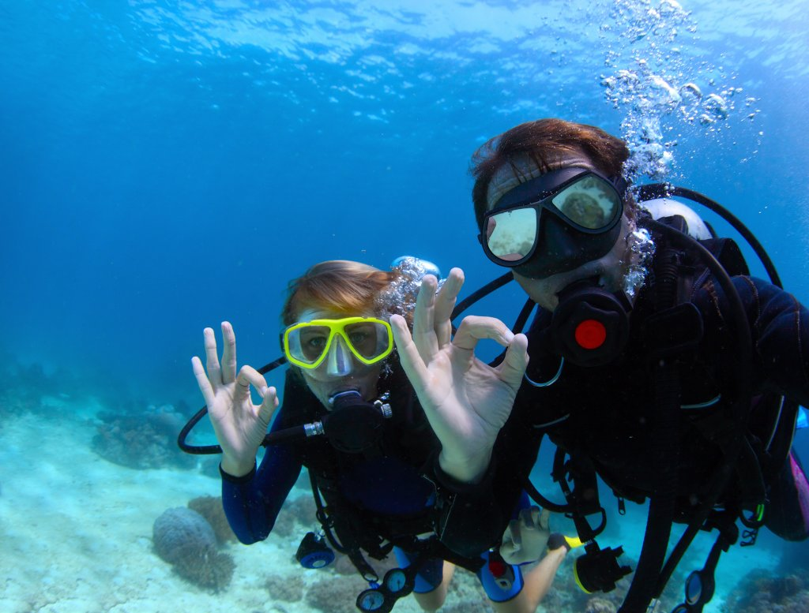

Кесоновата болест е известна също като декопмпресионна болест, болест на водолаза и аеробулоза. Самото състояние се характеризира с образуване на мехурчета газ в тялото при рязка промяна в налягането. Отделянето на мухерчета азот могат да увредят мозъка. Причината за отделяне на мехурчета газ може да бъдe открита в закона на Хенри: Концентрацията на газа в разтвора при постоянна температура е пропорционална на налягането на газа над разтвора (С = k.P). Температурата на човешкото тяло е константна. При гмуркане газовата смес в бутилката получава налягането от една атмосфера на морското равнище, но и налягането на слоя вода над гмуркача. Като следствие от това наблюдаваме увеличаване на концентрацията на разтворен газ в кръвта. Ако много рязко гмуркачът се върне на по-ниско налягане, концентрацията на разтворени газове рязко ще се окаже непропорционална и като нормална физична реакция газовете ще излязат от разтвора, но вместо това да стане в белия дроб контролирано, това ще се случи във всички тъкани на тялото. Отделените мехурчета газ могат сериозно да попречат на кръвоснабдяването на дадени органи, а с това да доведат до парализа и смърт. За да се избегне това състояние гмуркачите правят плавен преход при промяната в налягането чрез декомпресия на определена дълбочина.

Източници на информация:
flexikon.doccheck.com
wikipedia.org